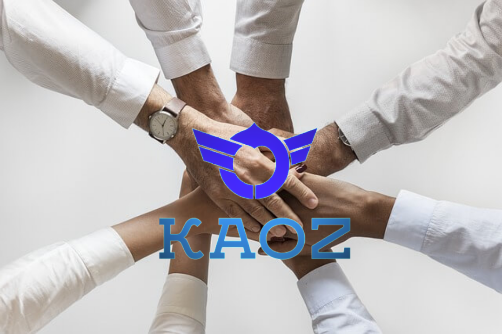
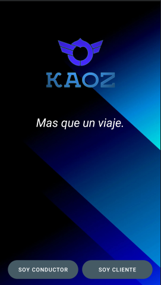

Todo va sobre ruedas cuando se tiene libertad de movimiento, ya sea para viajar por
la ciudad o para cumplir sueños. Las oportunidades surgen, se plantean y se convierten
en realidad. Lo que empezó como una manera de conseguir viajes pulsando un botón ha dado
lugar a millones de conexiones entre personas. Gracias a esto, gente de todo el mundo puede
desplazarse a cualquier lugar con la ayuda de nuestra tecnología.
Nuestro objetivo es:
Tener sostenibilidad
Viajar mucho más
Su seguridad es nuestra prioridad
Nos adaptamos a la diversidad
Kaoz surge para Iztapalapa
Valores
Enfoque local
Centrados en el Consumidor
Diversidad
Hacer lo correcto
Resolver problemas
Persesverancia
Idealistas
Arriesgados

Mision
Nuestra misión en Kaoz es brindar transporte, para todos, en todas partes.
Vision
Un lugar en el que todos puedan ser genuinos y donde la autenticidad se celebre como fortaleza. Al crear un ambiente donde las personas de todas las procedencias puedan prosperar, contribuimos a que Kaoz sea una mejor empresa, tanto para nuestros empleados como para nuestros clientes.
Soporte técnico para usuarios de AndroidTM
Kaoz es una aplicación oficial de los Alumnos del TecNM iztapalapa III sin embargo los desarrolladores que trabajaron en la app son Karlos Abisai G. y Oscar Emilio P.
Dentro de esta app incluye una de las tecnologias utiles en movilidad como es la API de google maps.
¿Qué novedades incluye la versión 1.1.0?
Busqueda en tiempo real del la ubicacion del usuario.
Tiene tecnologias novedosas tales como el servicio de realtime.
Las API que aparecen sobre este proyecto son versiones estables.
Mejoras de accesibilidad y uso en tiempo real.
Diseño amigable con el usuario y Facilidad de pantallas y trasiciones.

Contacto Nuestros datos de contacto
Dirección
Orquídea 71, San Miguel Teotongo, Iztapalapa, 09630 Ciudad de México, CDMX
Cuando usa Kaoz, nos confía sus datos personales. Estamos comprometidos a mantener esa confianza. Eso comienza con ayudarlo a comprender nuestras prácticas de privacidad.
Este aviso describe los datos personales que recopilamos, cómo se utilizan y comparten, y sus opciones con respecto a estos datos. Le recomendamos que lea esto junto con nuestra descripción general de privacidad , que destaca los puntos clave sobre nuestras prácticas de privacidad.
General de privacidad
Kaoz recopila y usa datos para permitir un transporte, entrega y otros productos y servicios confiables y convenientes. También utilizamos los datos que recopilamos:
• Para mejorar la seguridad y protección de nuestros usuarios y servicios.
• Para soporte al cliente
• Para investigación y desarrollo
• Para habilitar las comunicaciones entre usuarios
• Para enviar comunicaciones de marketing y no marketing a los usuarios.
• En relación con procedimientos legales
Kaoz no vende ni comparte datos personales de los usuarios con terceros para su marketing directo, excepto con el consentimiento de los usuarios.
Terminos y Condicones
• Prestar servicios de intermediación (en adelante, los “Servicios”) el Conductor y los usuarios que accedan, naveguen o utilicen Kaoz y los sitios web de Kaoz (en adelante, el “Pasajero”) para organizar y planificar en línea la contratación directa de transporte privado de automóvil, ya sea individual o compartido;
• Cumplir con los Términos y Condiciones de Uso de Kaoz Driver a los que usted se adhirió;
• Registrarlo como Conductor en la Plataforma;
• Generarle un perfil dentro de nuestros sistemas, creando un usuario, mismo que será único e intransferible;
• Solicitar información específica relacionada con las actividades que realice como Conductor a través de la Plataforma;
• Validar la información que se le solicite para registrarlo como Conductor en la Plataforma;
• Verificar que cuente con las habilidades, aptitudes y requisitos legales para registrarlo como Conductor en la Plataforma;
• En caso de ser necesario, realizar las gestiones para tramitar su RFC;
• Contactarle a través de medios electrónicos o llamadas de teléfono para recopilar información necesaria para registrarlo como Conductor en la Plataforma;
• Permitir que se generen comunicaciones entre usted y el Pasajero a través de la Plataforma, mensajes SMS y/o llamadas;
• Recabar su información financiera para cobrar y transferir dinero a la cuenta que usted dio de alta y para cualquier otro propósito relacionado con la prestación de los Servicios;
• Realizar la tramitación necesaria a efecto de generarle facturas y certificados sobre retención de impuestos;
• Utilizar su fotografía registrada dentro de la Plataforma a efecto de que el Pasajero lo conozca y se identifique con usted.
• Recabar información de los viajes que realice a través de la Plataforma, incluyendo lugar de partida y destino, fecha y hora del viaje, localización en tiempo real, duración, kilómetros recorridos, monto cobrado y forma de pago;
• Prevenir, detectar y en caso de ser necesario tratar y combatir el fraude o las actividades que se registren como poco seguras;
• Investigar, registrar y llevar a cabo la gestión de inquietudes o reclamaciones en los que usted se encuentre involucrado;
• Gestionar pruebas, investigaciones y análisis, así como desarrollar productos y aprendizaje automático con el fin de mejorar su experiencia y la del resto de los usuarios;
• Registrar, obtener y atender información relacionada a incidentes de seguridad que se efectúen durante sus viajes con la finalidad de atender dicho incidente y darle solución de manera pronta, colaborando en caso de ser necesario y de ser requerido, con autoridades competentes de acuerdo a lo previsto por la normatividad aplicable;
• En caso de que el Pasajero o el Conductor así lo solicite, o bien de manera automática en aquellos casos en que sea materialmente posible, registrar el audio y/o el audio y video de su viaje, con el propósito de coadyuvar a proteger la seguridad física del Pasajero, Conductor y terceras personas, así como para colaborar en actividades relacionadas con la prevención, investigación y prevención de delitos ante las autoridades competentes de acuerdo con lo previsto por la normatividad aplicable. Atendiendo al propósito descrito anteriormente, los mencionados archivos de audio y/o de audio y video serán conservados por Kaoz por un período de 60 días o, en su caso, por el período que resulte necesario para cumplir con los fines autorizados por el titular, lo que resulte mayor;
• Registrar las órdenes de servicio del Conductor y el estado de las transacciones, a efecto de coadyuvar a proteger la seguridad personal y de los bienes del Conductor, Pasajero o terceros;
• Registrar las evaluaciones que se emitan al Pasajero de manera anónima;
• Analizar Datos Personales para brindar al Conductor un servicio más personalizado y conveniente;
• Para mejorar la seguridad de los usuarios y servicios, brindarle soporte en caso de necesitarlo, realizar tareas de investigación y desarrollo;
• En caso de ser necesario para investigar o resolver reclamos o controversias que se relacionen con el uso de la Plataforma, o según lo permita la ley vigente, o si lo solicitan organismos reguladores, entidades gubernamentales e investigaciones oficiales;
• Grabar el contenido de las llamadas y mensajes que haga o envíe el Conductor a través de la Plataforma a fin de verificar los hechos y atender las quejas en caso de controversias, accidentes o incidentes de seguridad del Conductor; y
• Compartir la información necesaria en caso de ser requerida por una autoridad competente.